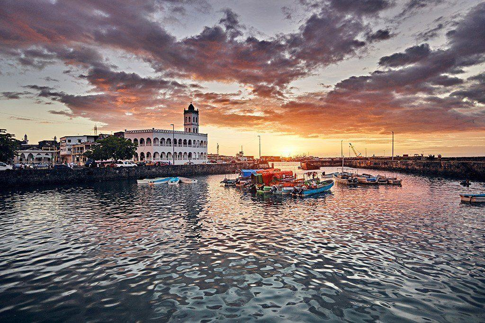
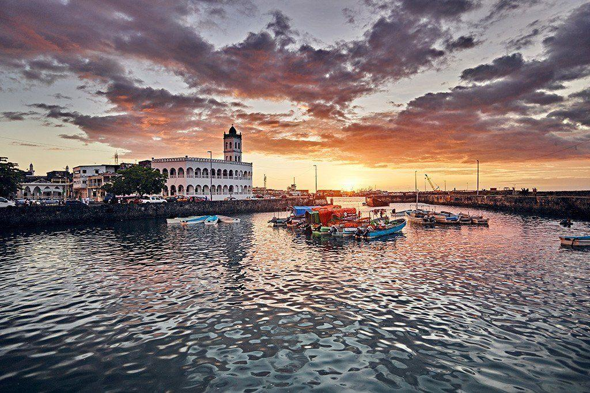

Sommaire
Ce site vous invite à explorer l’histoire, les traditions et les paysages des Comores. De la lutte pour l’indépendance aux mariages Anda, en passant par les ports et les volcans, chaque page vous plonge dans l’âme comorienne.

Ce site vous invite à explorer l’histoire, les traditions et les paysages des Comores. De la lutte pour l’indépendance aux mariages Anda, en passant par les ports et les volcans, chaque page vous plonge dans l’âme comorienne.
